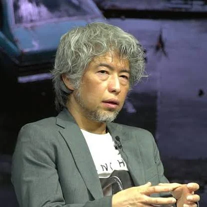

Team Silent

A Team Silent foi uma equipe da Konami responsável pela criação dos quatro primeiros jogos da franquia Silent Hill. Seu trabalho ficou conhecido pelo foco no terror psicológico, narrativa profunda e atmosfera sombria.
Principais Integrantes
Keiichiro Toyama
Diretor do primeiro Silent Hill e responsável pela ideia principal da série.

Akira Yamaoka
Compositor das trilhas sonoras e designer de áudio da franquia.

Masahiro Ito
Diretor de arte e criador de criaturas icônicas, como o Pyramid Head.
Hiroyuki Owaku
Roteirista responsável por grande parte da história de Silent Hill 2.
Contribuições da Equipe
- Criação da cidade fictícia de Silent Hill.
- Desenvolvimento do terror psicológico.
- Trilhas sonoras marcantes.
- Design de monstros inspirado nos medos humanos.
- Narrativas profundas e emocionantes.